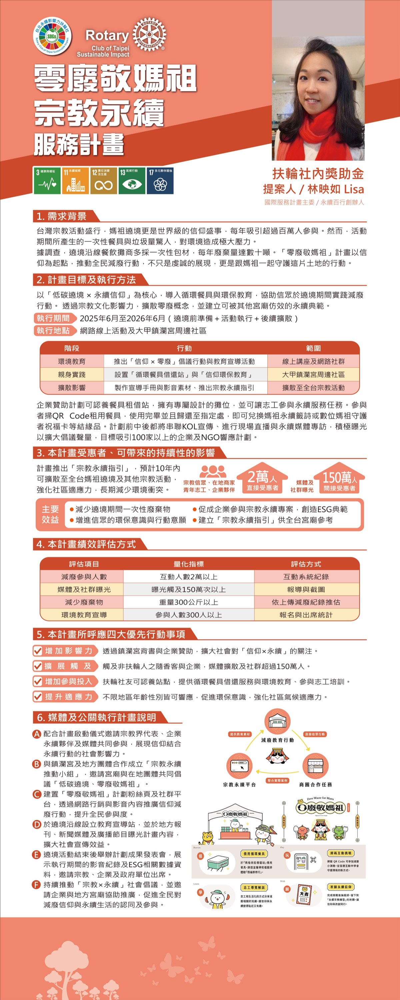

She turns zero waste, beach cleanups, and ocean sustainability from ideals into daily action, bringing hundreds of volunteers together to create real change.
See full profile →
The Dajia Jenn Lann Temple Mazu pilgrimage is one of the largest religious folk events in Taiwan. In 2025, an estimated nearly 4 million participants took part, generating NT$6 to 8 billion in economic output, but the same period also produced 150 to 180 tonnes of waste. After the nine-day, eight-night festival, the single-use paper bowls, paper cups, disposable chopsticks, plastic bottles, and discarded blessing food piled up along the route became a point of tension between the space of faith and the local environment.
"Should the compassion of faith also be transformed into responsibility toward the land?" This question became the starting point of the "Zero Waste for Mazu" project. Led by the Club's proposing member Lisa, the project combines three core methods: circular economy design, behavior change strategy, and cross-site coordination, bringing the concept of zero waste into a site of faith with millions of participants, so that religious culture and sustainability practice can proceed side by side.
| Action | Content | Roles Involved |
|---|---|---|
| Reusable tableware borrow-and-return station | Set up a borrow-and-return mechanism for reusable tableware to replace single-use items | Volunteer team · Vendors |
| Tableware cleaning station | Design an on-site washing flow so reusable tableware returns immediately to the next user | Volunteer team · Temple |
| Bring-your-own tableware incentive | Use rewards and guidance to raise the proportion of worshippers bringing their own tableware | Volunteer team |
| Coordinating dishwashing space with temples along the route | Negotiate with temples along the Dajia pilgrimage route to provide water and space for dishwashing | Proposer · Temples |
| Designing a waste-reduction participation game | Turn sorting and recycling into interactive on-site participation design, lowering the barrier to participation | Volunteer team |
| Connecting Dajia local friendly vendors | Build a network of local friendly vendors to extend the circular model beyond a single event | Proposer · Business district |
Note: This project completed its first formal validation at the Xingang Lunzi snack station on April 20, 2026, with the next phase expanding to the route around Dajia Jenn Lann Temple.
First validation in Xingang on April 20, 2026: over 2,800 instances of meal collection and sorted recycling.
This project designs its indicators on the principles of being "quantifiable, trackable, and comparable." The first case in Xingang on April 20, 2026, validated the operability of the following indicators:
| Evaluation Item | Quantitative Indicator | Xingang Result, 2026.04.20 |
|---|---|---|
| Total recovery volume | Total waste weight statistics per event | 194.22 kg |
| Recycling and reuse rate | Recyclables (including food waste) as a proportion of total waste | 123.75 kg / 63.7% |
| Scale of participation | Number of meal-collection and sorted-recycling instances | About 2,800 |
| Detailed sorting tracking | Breakdown by metal cans / plastic bottles / glass bottles / paper bowls / food waste / general waste | 6 categories fully recorded |
| Behavior change indicator | Proportion of people bringing their own tableware to collect meals | First baseline measurement completed |
| Collaboration invitations | Proactive contact from local units / number of follow-up invitations | The Xingang local volunteer team proactively invited a return next year |
Complete data and charts are in Case Study: Zero Waste for Mazu.
This project does not treat a single event as the endpoint but takes "building a replicable module" as its long-term goal. Expected outcomes:
Moving "zero waste" from a concept inside corporate ESG reports into a religious folk setting with millions of participants, so the impact is seen together by worshippers, temples, vendors, and the media.
The Xingang case of April 20, 2026, received a feature interview and report from TVBS, extending the project from within the Club to mass communication. The next phase links temples and local vendor networks along the route.
Rather than relying solely on the labor of environmental volunteers for cleanup, the project designs interactive on-site waste-reduction games and incentive mechanisms, turning worshippers from passive participants into active practitioners.
By recording each implementation as concrete data and case samples (total weight, sorting breakdowns, behavior change indicators), the project can be replicated, improved, and continued across different sites and scales.